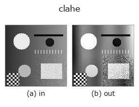

gray op• 数据种类:image → image
• 调用:fullseye.apply(img, "clahe", a=0.5, b=0.5)(2-D 的模型是一张图 + 两个标量旋钮 a,b∈[0,1])

*图为在 128×128 合成输入上实际运行的输出。左为输入，右为输出。点云以俯视散点显示(亮度 = z)，一维序列为折线，体数据为沿 z 的最大值投影，视频为中间帧，复数图像为幅值；无法成像的返回值直接显示数值。*
扫描旋钮 a(0.1 / 0.5 / 0.9，另一旋钮取默认):
▸ clahe: knob a sweep (docs site)
扫描旋钮 b(0.1 / 0.5 / 0.9，另一旋钮取默认):
▸ clahe: knob b sweep (docs site)
换别的图像(合成场景 / 照片 / 硬币。上排为输入，下排为对应输出。旋钮取默认):
▸ clahe: other inputs (docs site)
*第 4 列是彩色 (H,W,3) 输入。此算子能正确处理颜色而不跨通道(不把颜色通道当作第三个空间轴卷积)。*
对比度受限的自适应直方图均衡(分块,双线性拼接)。
> 以下的详细说明为原文 —— 摘要与标题已翻译。
• `a — タイル数 nb = 2 + int(3a)` (画像を nb×nb に分割)
• `b — **clip limit**。ビン平均カウントに対する倍率 256**b` で与える
(`b=0` → 1 倍 = 完全に平坦化されたヒストグラム = トーンマップ直線 =
強調ゼロ、`b=1` → 256 倍 = 1 ビンが取り得る最大値なので切り取りが
効かない = 素の AHE、`b=0.5 → 16 倍。OpenCV の既定 clipLimit=40` は
おおよそ `b=0.665`)。
★2026-09-02(この修正): それまで `b` は 完全に死んでいた(実測:
`max|clahe(x,0.5,0.0) - clahe(x,0.5,1.0)| == 0.0` きっかり)。CLAHE の
"C" は contrast limited の C であり、clip limit こそが AHE と CLAHE を
分ける当のものなので、実装は AHE であって CLAHE ではなかった ——
名前が嘘をついていた。ここで clip limit を実装して `b` に割り当て、
`b=1` が旧実装とビット一致する端になるよう倍率を選んである
(切り取りが起きない上限 = ビン数 256 倍)。
Tiles PARTITION the image (linspace boundaries, so the last tile absorbs the
H % nb / W % nb remainder), each tile's clip-limited CDF is its local tone map,
and every pixel blends the maps of its (up to) 4 nearest tile centres with
bilinear weights — the standard CLAHE interpolation (Zuiderveld 1994).
2026-08-30: 補間を追加(KNOWN_ISSUES #4 — 旧実装はタイルごとに独立に平坦化
しており、タイル境界に不連続(肉眼で見える格子)が出ていた)。タイル中心の
近傍領域ではそのタイルの CDF がそのまま支配的なので、旧実装と同じ写像族の
連続版になっている。
• 示例数据目录(下载 URL / 许可证) —— 2-D 用 skimage.data(BSD/公有领域)加合成图,3-D 给出真实数据源(Stanford/PDS 等)的下载 URL。
• 算子来历与参考文献 —— 该算子族所依据的研究/方法出处。
• 算法的正典(作者・年份)与用途见上面的族使用指南。
下面的程序已确认可以运行(与图相同的输入)。在 Studio 帮助中，此块会变成按钮，可当场加载并运行。
clahe 0.50 0.50
▸ Load this pipeline · Load & run
• gallery2d_gray_arith — py -3.11 examples/gallery2d_gray_arith.py
• poc_dehazing — py -3.11 examples/poc_dehazing.py
image 作为输入)identity · gaussian · mean_box · bilateral · unsharp · median · min_filter · max_filter
gray)gamma · invert · scale_clip · equalize · sigmoid · sk_adapthist · sk_enhance_contrast · sk_autolevel
*Provenance: ops.py — 2D 算子登记表。本条目由 tools/opdocs.py md 自动生成(请勿手工编辑)。*
© 2026 Kazufumi Furuse — Fullseye operator documentation. Licensed under Apache-2.0.
{kind=link}
{kind=link}
{kind=link}